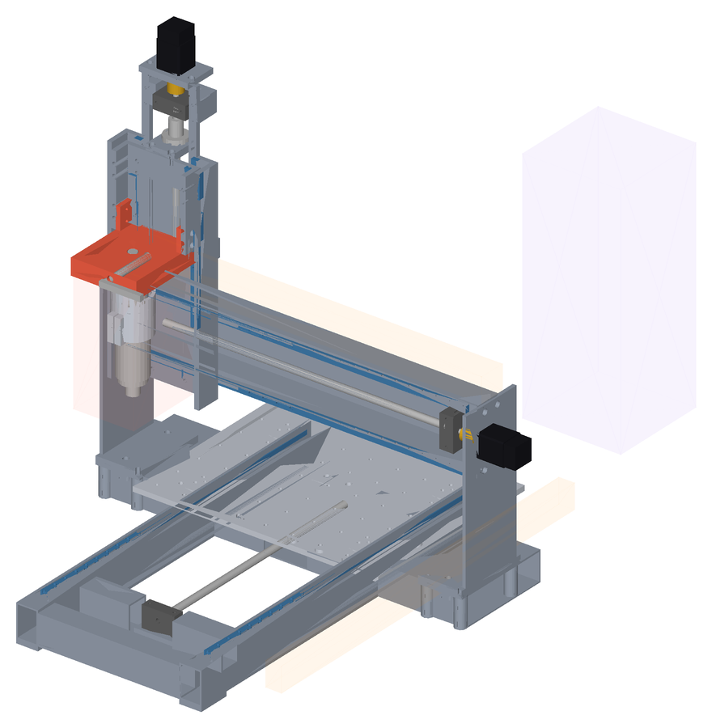
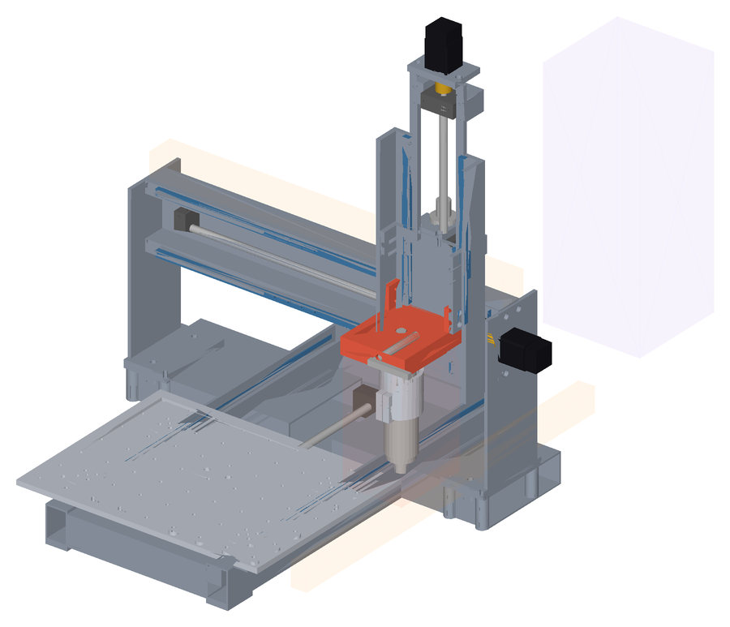
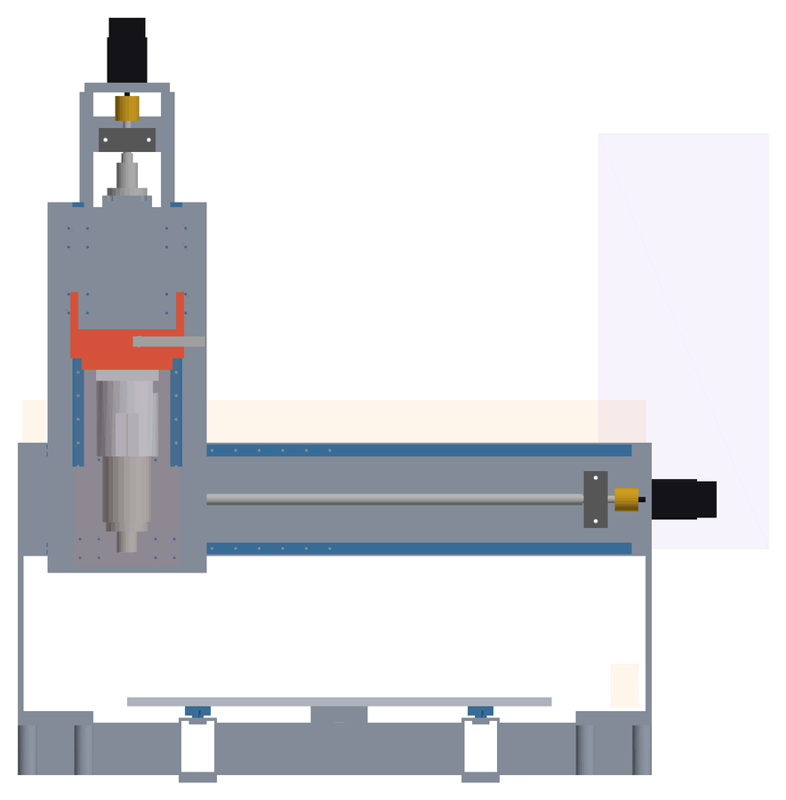
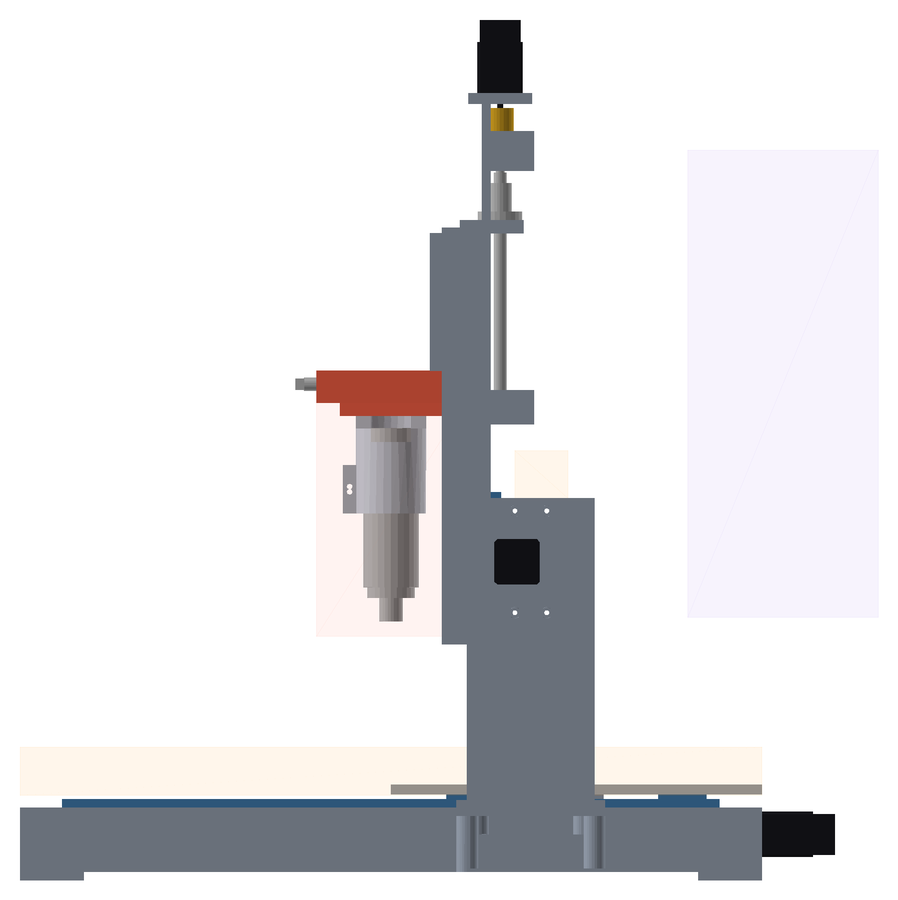

02 · Base Light Core · CAD
Light Core
in CAD.
Assieme parametrico della base Light Core con le lavorazioni di dettaglio, costruito dalla stessa pipeline della Standard (tools/cad/standard_assembly.py --base light, parametri in tools/cad/light_params.py): controlli di collisione in HOME, CENTER, MAX e DOCK, sweep di 125 pose, traiettoria del trasferitore, masse contro la BOM. Valori MULE / TARGET.
Light Core25,8 kg dal CADSoglia 18 kgICD v4
Controlli
0 collisioni.
| Config | X / Y / Z | Collisioni | Giochi < 8 | STEP | 3D |
|---|---|---|---|---|---|
| HOME | 0 / 0 / 0 | 0 | 0 | STEP ↓ | 3D |
| CENTER | 225 / 175 / -70 | 0 | 0 | STEP ↓ | 3D |
| MAX | 450 / 350 / -140 | 0 | 0 | STEP ↓ | 3D |
| DOCK | 440 / 0 / 0 | 0 | 0 | STEP ↓ | 3D |
Sweep 125 pose: 0 collisioni, 0 FAIL, 0 WARNING. Trasferitore 42 pose: 0 collisioni.
Masse
25,8 kg.
| Riga BOM | Pezzo | BOM kg | CAD kg |
|---|---|---|---|
| ML-BAS-001 | Telaio basamento | 5,2 | 5,2 |
| ML-GAN-002 | Spalle gantry | 1,8 | 1,8 |
| ML-GAN-001 | Trave gantry | 2,4 | 2,4 |
| ML-TBL-001 | Tavola Y / tooling plate | 2,2 | 2,2 |
| ML-Z-001 | Piastra asse Z | 0,5 | 0,5 |
| ML-TD-001 | Master kinematic plate | 0,6 | 0,6 |
| ML-TD-002 | Base spindle receiver | 0,3 | 0,3 |
| ML-SP-003 | Spindle mount | 0,3 | 0,3 |
| ML-TD-003 | Clamp manuale | 0,2 | 0,2 |
Macchina: 25,8 kg dal CAD (commerciali dalla BOM) contro 25,8 kg della BOM; soglia 18 kg: NON PASSA. Ingombro 741 × 769 × 811 mm.
Scelte
- Stessa cinematica e stessa ICD v4 della Standard (ponte fisso, tavola Y, ToolDock comune): cambiano componenti e sezioni.
- MGN12 / MGN12H su X, Y e Z, SFU1204 con BK10/BF10 su tutti gli assi, NEMA17; spindle BLDC 400 W ER11 Ø52 (classe) nel mount comune.
- Telaio a scala in profili 40 × 60 (non 40 × 40): asse Y e staffa della chiocciola dentro il telaio con 8 mm di gioco e NEMA17 sotto la tavola.
- Spalle a piastra 6 mm ai lati della trave, flangia ICD §5 in basso (rialzi +50 mm); motore X sulla faccia esterna della spalla destra.
- Trave 50 × 120 con canale vite (non 40 × 80): BK10/BF10 fra le guide X a 104 mm con 8 mm dai pattini; vite Y 480 mm (non 470) per 8 mm a fine corsa.
- Asse spindle a 65 mm dalla slitta (Standard 53): con le guide MGN12 l'inviluppo testa ±70 resta a 8 mm dalle guide Z.
- ToolDock manuale: albero a camma nella master sul pull-stud comune (≥ 0,5 kN); sedi del clamp automatico e dei connettori del Platform Pack già lavorate.
- Massa dal CAD sopra il target di 18 kg (D010): la topologia della Standard, ridotta, non basta; servirebbe una Light a piastre (vite X sopra una trave a profilo, telaio a piastre) come nella BOM.
Viste di controllo




Rigenerare
python tools/cad/standard_assembly.py --base light, poi standard_parts.py, export_glb.py e render_views.py con lo stesso --base light.